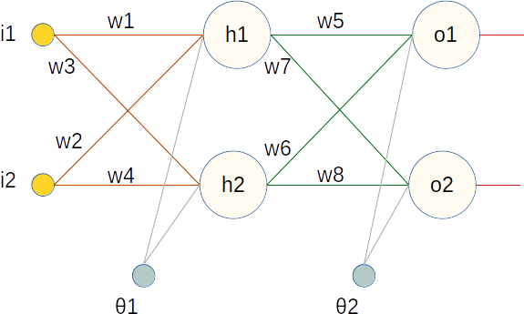

Universidad Politécnica Salesiana
Carrera de Ingeniería de Sistemas
Examen Interciclo Inteligencia Artificial II
Estudiante: JULIO ANDRES VISCAINO QUITO
Dada la siguiente red neuronal y los siguiente datos:

- w1 = 0.30538075548615934
- w2 = 0.403703920662865
- w3 = 0.35415809870983306
- w4 = 0.309124297371974
- w5 = 0.8531349247592219
- w6 = 0.29982047457131417
- w7 = 0.5404837136189062
- w8 = 0.7295587003564565
- d1 (salida deseada 1) = 0.98
- d2 (salida deseada 2) = 0.02
- theta1 (bias 1) = 0.31030361198044853
- theta2 (bias 2) = 0.6
- i1 (entrada 1) = 0.7745566371939419
- i2 (entrada 2) = 0.8294041418087847
- alpha = 0.4317566242870382
Aplique el algoritmo de retropropagación de error a fin de realizar los siguientes
cálculos (empleando la mayor cantidad de decimales que pueda):
- Obtener el nuevo valor del peso w1.
- Valor de ajuste que se debe aplicar al peso w1.
- Obtener todas las derivadas necesarias para calcular la Derivada del Error total con respecto al W1.
Deberá desarrollar el ejercicio a mano y cargar en el AVAC una fotografía del cálculo realizado (indicando paso a paso los resultados obtenidos).
También deberá llenar el formulario indicando las dos respuestas obtenidas.